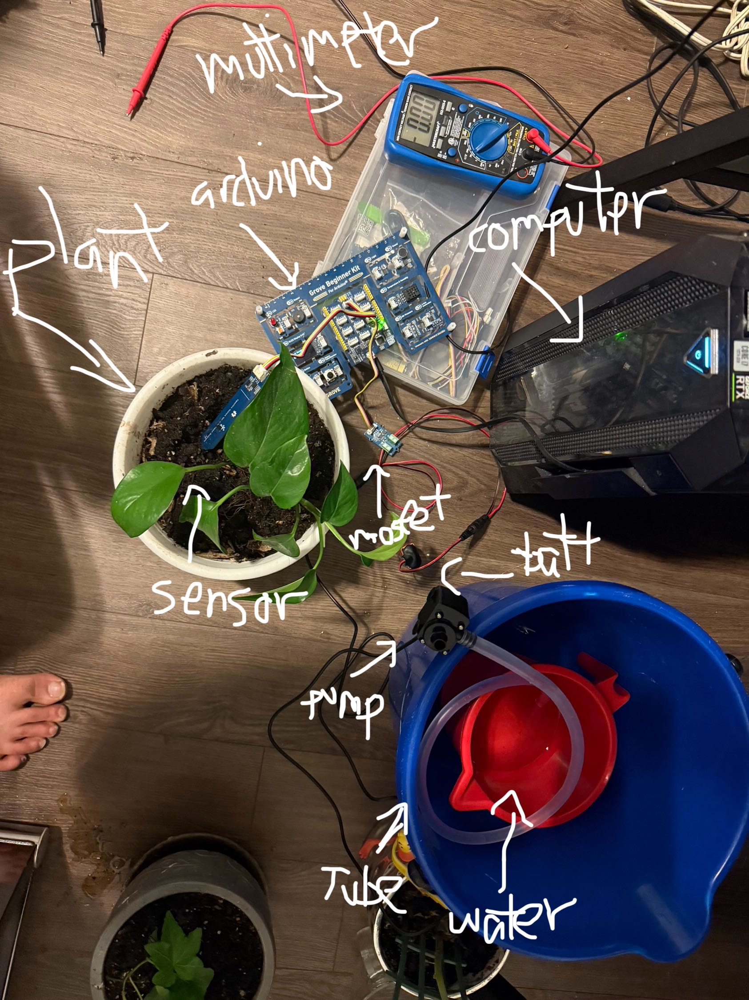

Engineering Communication Portfolio
I am a Mechanical Engineering student at York University with a strong interest in applying engineering principles to real-world challenges. My academic experience has helped me develop a foundation in problem-solving, design thinking, and analytical reasoning. A key area of my development has been communication, particularly through ENG2003, where I have learned how to effectively present technical information in multiple formats, including written reports, presentations, and visual communication. I have improved my ability to structure ideas clearly, adapt my message to different audiences, and communicate with both precision and clarity. Beyond coursework, I am interested in building projects and exploring opportunities that combine engineering with business and innovation, as I am motivated by creating solutions that have practical, real-world impact. In my free time, I focus on maintaining discipline and personal growth through fitness and exploring new ideas related to engineering and entrepreneurship. Overall, I aim to continue developing as both an engineer and a communicator, recognizing that strong communication skills are essential for collaboration, leadership, and long-term success in the engineering field.
Why did you choose this piece? The reason I picked this presentation is that it is an example of my capacity to express practical engineering problems in a way that can be well comprehended. Urban planning is related to many disciplines including social, environmental, and economical aspects of the problem. What does this piece say about your development as a communicator? In this work, you can see how I developed my skills of organizing information and making it coherent for the target audience in order to provide them with useful information. Here I improved my skills of explaining complicated notions in simple words, such as sustainable city and smart technology. Did this piece push you out of your comfort zone? Indeed, it was one more occasion when I stepped out of my comfort zone while completing this task. Specifically, I had to deliver this presentation in front of an audience and share my thoughts at once. In addition, group projects can be challenging in terms of their implementation process. Is this piece your best work? Why or why not? I think this is one of the best works I have done as there was enough information presented and it was complemented by good visual effects. However, this might be not my best work as it was done in cooperation with other people.
Why did you choose this piece? I chose this particular technical report because it exemplifies my capacity to communicate technical information through writing formally and structurally. In addition, the piece is interesting since it talks about artificial intelligence and algorithm auditing to mitigate the problem of misinformation. What does this piece say about your development as a communicator? My progress as a communicator is evident in this paper due to the improvements I made in terms of writing clearly, professionally, and analytically. As compared to my previous writings, I significantly improved my writing structure and clarity while adding relevant arguments supported by examples. Did this piece push you out of your comfort zone? Indeed, this writing piece took me outside my comfort zone because the work involved formal academic writing and citations. It was a task to be completed through analysis of sources and argumentation. Is this piece your best work? Why or why not? This piece is among my best works because I have made remarkable improvements in writing in comparison with previous assignments where some problems existed.
Why did you choose this piece? I selected this brochure since it reflects my skill to provide information concisely and visually. This piece is more effective than regular reports since it required me to provide a clear and simplified understanding of the issues of misinformation. What does this piece say about your development as a communicator? The process of developing this piece reflects my skills to create designs and layouts that convey an idea. The piece also reflects my ability to present ideas in simple and understandable language. Did this piece push you out of your comfort zone? The piece has challenged me since I was not only required to write but create good designs. The project forced me to condense lots of information into short sentences. Is this piece your best work? Why or why not? This is one of my good works due to its design and the clear presentation of ideas. However, it might not be my best assignment since it required me to simplify my ideas.
Why did you choose this piece? This project was chosen because it demonstrates that it is possible to implement an idea involving engineering and programming, making it functional through the use of the Arduino microcontroller, sensors, and other elements. In particular, the automatic plant watering system will be capable of determining the moisture content of soil and then providing water when necessary. What does this piece say about your development as a communicator? One aspect of this piece that indicates the development of my skills as a communicator involves being able to describe the operation of a technological system in detail. Additionally, it helped me become more competent at presenting the functioning of a process in a simple manner. Has this piece taken you out of your comfort zone? Indeed, this piece has taken me out of my comfort zone since it involves not only coding but also working with actual hardware and addressing challenges such as faulty wiring and the like. Is this piece your best work? Why or why not? This piece can be considered one of the best because it involves not just theory and programming but also making a functioning device as well as addressing all the necessary issues. However, the process of optimization still needs to take place.

My interest in engineering and innovation has encouraged me to explore ideas that combine technical knowledge with practical application. This has helped me build transferable skills such as problem-solving, creativity, and persistence when approaching new challenges.
My interest in entrepreneurship has strengthened my ability to think strategically, communicate ideas clearly, and consider how technical solutions can have real-world impact. It has also helped me develop initiative, adaptability, and long-term planning skills.
In my free time, I focus on fitness and personal growth. This interest has helped me build discipline, consistency, and self-motivation, which are valuable transferable skills that support both my academic work and my development as a future engineer.
Introduction Throughout the whole duration of ENG2003, my personal experience has proved to be quite complicated but valuable from the perspective of developing my communication skills as an engineering student. Initially, I assumed that this course will be dedicated exclusively to writing and writing-related skills but later on discovered it is far more than that. Various forms of communication were considered such as writing technical reports and presentations, designing visual aids etc. As an essential part of my learning process, several important theories and principles were covered. For instance, one of the most effective was the 7 C's of communication, namely: clarity, conciseness, completeness, correctness, concreteness, courtesy, and coherence. These principles contributed greatly into the enhancement of my skills in engineering communication. Application Examples As for examples, my technical report on artificial intelligence and algorithm auditing needed reorganization according to the aforementioned principles. In particular, it was not coherent until after I applied these principles, and my work became clearer and more structured. My second example is a brochure on disinformation that required presenting complicated ideas in a visualized form. Here, conciseness and clarity were essential alongside completeness, which turned out to be rather difficult but helped me improve my skills in visual communication. Also, working on my group presentation concerning urban planning, we needed to organize our ideas logically, which was helpful in terms of enhancing our skills in communicating with each other as a team. Thus, I can claim that the course exceeded all my expectations in regard to the value of communication in engineering. Personal Experience Before this course started, I could describe my communication skills as quite basic and, at times, unorganized, as well as lacking some professionalism since presenting technical information is rather difficult. However, after this course, I have learned how to communicate properly in various formats. The most significant improvement that can be seen is my ability to write technical reports since in order to create the final one, I learned how to structure, provide necessary evidence, and express my ideas professionally. Moreover, my skills in creating presentations have improved since I have been working hard on my oral speech during the urban planning project. In addition, my abilities in visual communication have developed due to my work on the brochure. There are still many aspects of communication to improve; however, I think my ability to speak in public should be enhanced first since, sometimes, I feel uncomfortable in front of many people. Another important principle related to communication that I have learned in this course was Axioms of Communication according to which we communicate constantly in every possible way such as by means of tone, structure, body language, and so on. In this way, the understanding that communication does not only occur by words made me look at it differently. Conclusion Therefore, this course has provided me with a chance to improve my skills in many fields related to communication. I can expect using them successfully in other engineering courses and throughout my career.
Through ENG2003, I strengthened my ability to organize technical information clearly and professionally. My work on the technical report especially helped me improve structure, use of evidence, and clarity in formal communication.
Working on the urban planning presentation helped me improve the way I communicate ideas verbally, especially when presenting in front of others and contributing to a group setting.
The brochure project improved my ability to communicate through layout, design, and concise wording. It showed me that communication in engineering is not limited to writing alone.
I continue to work on becoming more confident during public speaking and on making my communication more concise while still maintaining clarity and completeness.
For this assignment, I used artificial intelligence tools, specifically ChatGPT, to support the development of my engineering communication portfolio. AI was primarily used to assist with structuring ideas, improving clarity, and refining written responses for different sections of the portfolio. For example, I used AI to help organize my reflections, improve sentence flow, and ensure that my responses clearly addressed the required questions for each project. Additionally, AI was used to help with formatting and minor coding support when building my portfolio website using HTML and GitHub Pages. This included guidance on how to structure sections, add links to files, and properly display content such as images and project documents. However, all final decisions regarding design, content selection, and organization were made by me. It is important to note that all ideas, experiences, and examples presented in this portfolio are my own. AI was used only as a support tool to improve the clarity and presentation of my work, rather than to generate original content without my input. I reviewed and edited all AI-generated suggestions to ensure accuracy and alignment with my personal experiences and understanding. Overall, AI was used responsibly as a tool to enhance my communication and technical implementation, while maintaining academic integrity and personal authorship of the work.